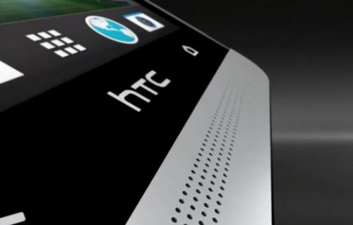

400-500-8888
时间：2016-04-21

近年来，关于HTC陷入困境的报道层出不穷。面对问题，HTC决定做出一些行动。据上个月台湾电子时报(DIGITIMES)的报道称，HTC宣布将在全球进行15%的裁员，并削减35%的公司运营费用。之后，HTC将进行重组，建立新的部门，更注重于生产高端智能手机，以及向虚拟现实(VR)市场转型。但与这种对外高调宣布在高端市场打持久战的态度大相径庭的是，HTC最近被外媒曝出进入了孟加拉等发展中国家的手机市场，销售一些廉价的手机，价格大约在150美元左右，而此前HTC一直表示不屑于低端市场，生产的也都是400美元的中高端手机。
尽管做出了去发展中国家卖低端手机的举动，但HTC似乎依然坚持自己是高端手机制造商。HTC南亚市场的一名高管说：“我们不会销售价格低于100美元的手机”，而且东南亚的低端手机市场上早就遍布了中国品牌，三星、苹果等巨头也对东南亚市场青睐有加，东南亚本土手机厂商更是不甘寂寞，也加入这场混战。各方激烈的争夺使得东南亚手机市场趋于饱和状态，而在这一市场中并不占优势的HTC若真的决定在此时入局，则获胜的机会微乎其微。再结合HTC坚持走高端路线的态度以及近来表现出的对于VR市场的热情，可以推测，HTC此举很可能是个“以进为退”的策略。
一、东南亚智能市场趋于饱和，HTC入局太晚
近年来，小米、中兴、魅族、华为等品牌遍布了东南亚低端手机市场。据全球五大市场研究公司之一的GFK去年十月发布的数据显示，在东南亚手机市场上，有345个中国制造的智能手机品牌，它们的售价普遍介于50美元至200美元之间，低于国际品牌的58%。
小米全球运营副总裁雨果·巴拉（Hugo Barra)说：“我们已在印尼售出10万部红米1S和红米Note智能手机。”
中兴通讯亚太地区品牌总监刘国兴表示：“东南亚市场是我们未来的主要市场之一。其中，印尼在我们战略市场中排第一，泰国的销售量也在急剧上升。”
魅族的相关负责人说：“魅族在东南亚的影响力不断上升，特别是马来西亚、菲律宾、印度、印度尼西亚、尼泊尔、缅甸等国家。目前马来西亚和菲律宾已经有代理商销售。”
除了中国手机，三星、苹果这样的大牌也瞄准了东南亚市场。三星在南亚地区推出了一款低于100美元的Tizen操作系统的智能手机，苹果则与越南FPT集团(FPT Corp.)合作，在越南各大城市开设零售店以促进销量。而越南本土手机厂商面对广阔的市场，自然不甘心将其拱手外来品牌，加之当地政府的支持，也迅速崛起。刘国兴说：“当地本土品牌崛起确实很厉害。近年来，印尼、菲律宾的本土品牌有很大的变化。”
中、韩、日以及欧美等各方在东南亚市场进行的激烈混战，推动了东南亚智能手机市场的迅速发展，截至去年8月，东南亚地区共销售1.2亿台智能手机，同比增长了44%，印尼、柬埔寨、菲律宾、新、马、泰等国的智能手机和平板手机的销售额同比增长30%，多达164亿美元。
但与此同时，东南亚手机市场也逐渐趋于饱和状态。此时若HTC进军这一市场，并非明智之举。从对市场的熟悉程度来看，HTC一直将自身定位于高端市场，与其他在低端市场摸爬滚打多年的品牌相争，落败的可能性极大；从品牌声誉来看，HTC不像苹果、三星那样声名在外，也不像早已入局的其他国产手机那样声名鹊起；从时间来看，市场趋于饱和，HTC入局为时已晚。因此结合HTC坚持的高端手机战略来看，这可能是一个“以进为退”的策略。
二、进入低端手机市场可能是为了将来更彻底的退场
今年6月，彭博社发文称HTC库存创历史新高：“截至上季度末，HTC的产成品库存占总资产的比例高达2.35%，创历史最高记录。在该公司的全盛时期，这一数字很少突破1%。”
与此同时，HTC股价也大幅下跌，据HTC财报显示，今年前7个月，共创收819.42亿元新台币，同比下降24.68%；7月份共营收74.08亿元新台币，环比下降14.65%，同比下降30.15%，创下17个月来新低；该公司第二季度每股亏损为9.70元新台币。而之所以产生亏损，主要是由于HTC手机市场需求低于预期，以及在大陆销量急剧下降。据报道，HTC今年第二季度智能手机售出540万台，远低于去年同期的680万台。
其实，库存多并不一定意味着情况糟糕，1995年，诺基亚的库存率曾超过14%，但在随后十年，诺基亚手机销量呈爆炸式增长，成为当时世界上最大的手机制造商。不过HTC却并未出现任何爆炸式增长的迹象，因此库存过多对HTC来说并非好消息。
过多的库存将成为HTC高端战略的阻碍之一，虽然HTC此前一再表示不会走低端路线，但面临库存过多以及在大陆售出困难的窘境，HTC也不得不想一些办法。所以，在低端手机领域并无优势的HTC选择在市场饱和期进军东南亚，极有可能是在进行“清仓处理”，最终目的则是为了以后更彻底地撤出低端市场。
三、除了做高端手机，HTC还可能进军VR市场
在今年年初于西班牙巴塞罗那举办的2015年世界移动通信大会(MWC 2015)上，HTC除了发布智能手机HTC One M9外，还推出了首款VR设备HTC Vive。HTC董事长王雪红表示，虚拟现实及个人智能医疗是HTC未来的发展方向。“想想看医学院的实习生可以藉VR来练习手术细节，或是进入VR故宫，就可以体验各种文物。VR可以让你经历别人所经历过的世界，是个大突破，也可以将自己的人生再经历一次”，王雪红说。
此前，面对VR在手机上的颓势，手机中国联盟秘书长王艳辉曾说：“HTC应该转型，把手机业务卖掉，去赌虚拟现实”。如今看来，HTC尽管没有卖掉手机，但却对VR市场兴致盎然。据悉，HTC明年将推出其第一款虚拟现实头盔，现正与一千多家开发商合作，为其即将推出的虚拟现实头盔做等内容的开发。 当下做VR的公司也不在少数，而VR市场目前稀缺优质内容，如果HTC能做好内容方面，也许能在VR市场占据一席之地。
《孙子·行军》中说：“辞强而进驱者，退也”，这也许正是HTC目前的策略。至于HTC“以进为退”的策略能否成功，还有待时间的检验。
Copyright © 2015-2016 Maker Cloud 创客云 版权所有粤ICP备32852599-1


 在线咨询
在线咨询 在线咨询
在线咨询 400-500-8888
400-500-8888